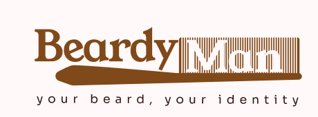

De Braga, Portugal, para o mundo, a dar os primeiros passos no mundo do UX & UI.
Atualmente a frequentar o curso de Designer, com muita vontade, paixão e café.
Descobre mais sobre mimOlá! Sou o Emanuel Rodrigues, designer UI & UX em formação. Com uma mente curiosa e muita vontade de aprender, procuro criar experiências que unam funcionalidade, estética e empatia.
Atualmente a estudar design e a construir este portfólio com dedicação, café e paixão pelo detalhe. Acredito que o bom design resolve problemas e aproxima pessoas.
| Ano | Instituição | Grau |
|---|---|---|
| 2012 | Escola Profissional do Minho | Curso de Informática |
| 2020 | Universidade do Minho | Licenciatura em História |
| 2025 | Online Platform IEFP | Designer Gráfico UI&UX |
| 2025 | Coursera | Princípios do UX |
| 2025 | Coursera | Princípios da AI em UI&UX |
| Ano | Empresa | Cargo |
|---|---|---|
| 2021-2022 | DesignCo | Junior Designer |
| 2021-2022 | DesignCo | Junior Designer |
| 2023-Presente | Freelancer | UX/UI Designer |
| Projeto | Descrição | Link |
|---|---|---|
| Milo | Marca criada para empresa de UI&UX especializada em auditorias e criação de conteúdo para web. | Ver Projeto |
| Blitztour | Plataforma de turismo. | Ver Projeto |
|  Beardyman | App/website de guias de estilo e produtos para a barba. | Ver Projeto |